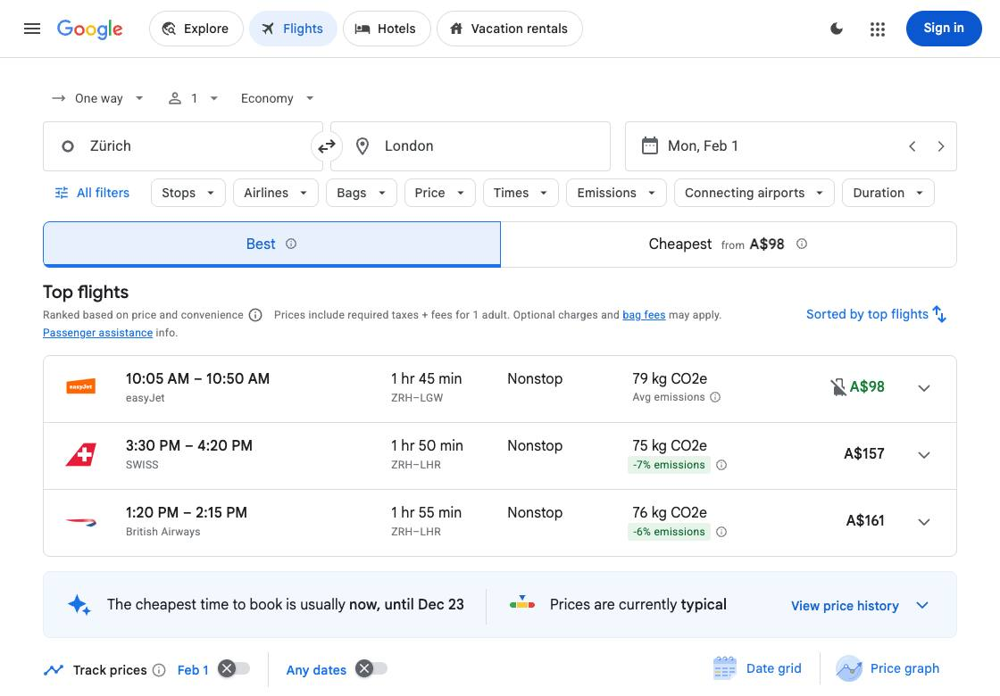
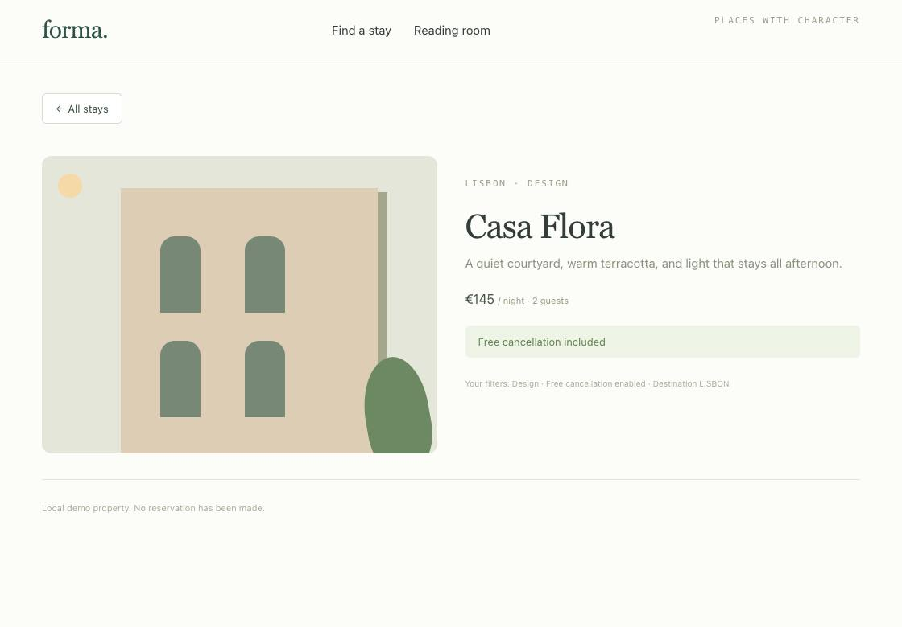

JevStyle Browser Agent · Preview
A goal. A browser.
One decision at a time.
JevStyle scores each next action and page element. Choose JevStyle-only decisions or a local generative model that reviews every step, then inspect what the browser actually did.
Measured optimization · separate live runs
Skip review when the page has changed
485.193 s → 323.359 s: 33.35% less elapsed time in these two runs.
Both used the same Zürich to London goal, February 1, 2027 departure date and local 27B model. The new run passed all nine checks with 21 JevStyle scoring calls, 8 observations discarded before review, 13 reviews and 13 executed actions. Every executed action was reviewed.
Most earlier time was spent processing the 27B reviewer’s prompts. The runtime now checks for page changes after JevStyle scoring and can skip an already outdated review. Consecutive skips are bounded; target freshness and occlusion checks still run before input.
| Decision-loop component | Earlier run | Optimized run |
|---|---|---|
| JevStyle scoring | 50.778 s | 42.656 s |
| 27B review | 424.502 s | 270.622 s |
| Field text | 5.221 s | 4.565 s |
| Browser and other loop work | 4.692 s | 5.516 s |
The later run used AC power with Low Power Mode still reported on; power state was not recorded for the earlier run. Browser/network conditions and caches were live. This is not a controlled speedup estimate and does not compare directly with the upstream 7.1-second system, which used different model services without per-step 27B review.
Timing and provenance ↓ · Optimized flight report ↓
Actual final snapshot, captured after the loop during independent verification. No flight was selected or booked.
Earlier 485-second flight capture
Historical browser snapshots · 485-second baseline
Earlier Zürich to London run
485.193 seconds in the decision loop, 23 JevStyle scoring calls, 23 generative reviews and 13 executed actions. Reviewer: qwen3.8-27b-uncensored-q4_k_m. All nine flight checks passed. No flight was selected or booked. These are discrete recorded snapshots, not continuous video.

The final frame was captured during independent verification after the loop; it has no invented exact frame timestamp.
Earlier 4B hotel capture
Actual browser snapshots
A hotel search, step by step
A separate verified run of the synthetic hotel fixture: 20.54 s, 7 JevStyle scoring calls and 7 local reviews. Reviewer: qwen3:4b-instruct-2507-q4_K_M. These are snapshots after individual actions, not continuous video. Its timing is separate from the suite below.

Inspect the evidence
Follow every choice
These are saved runs, not a live connection to your browser. Playback pauses between decisions for inspection; reported timings are from the original run.
8 named scenarios passed across 2 separate release-validation batches using identical executable source. This is not one timed suite. Batches: 27B optimized flight check; 27B optimized seven-scenario regression. The flight task stopped before selecting or booking.
These are successive development runs, with changes to prompts and stopping policies. The counts are observed outcomes, not a controlled comparison of model accuracy.
Loading recorded runs…
Executed action
Run traces will appear here.
JevStyle operation scores
JevStyle target scores
Run records and measurement scope
Completion is checked separately from the agent's DONE decision. Runs marked “Independent verifier” are stopped when deterministic task checks pass; the model need not choose DONE. A reviewed or hybrid result includes the generative model and must not be interpreted as JevStyle-only accuracy. A successful fixture run shows one controlled task; it does not establish reliability across arbitrary websites. Failed and blocked runs remain visible.
See the report's timing scope for setup and verification boundaries. These measurements are not a direct comparison with the upstream 7.1-second video.
| Scenario | Attempt | Result | Elapsed |
|---|---|---|---|
| Find a hotel | 27B optimized seven-scenario regression | passed | 63.08 s |
| Open a research article | 27B optimized seven-scenario regression | passed | 7.08 s |
| Search and filter a catalog | 27B optimized seven-scenario regression | passed | 74.27 s |
| Submit a synthetic support request | 27B optimized seven-scenario regression | passed | 69.98 s |
| Navigate and scroll a guide | 27B optimized seven-scenario regression | passed | 17.06 s |
| Select an asynchronous suggestion | 27B optimized seven-scenario regression | passed | 22.69 s |
| Find a Wikipedia article | 27B optimized seven-scenario regression | passed | 67.59 s |
| Find a hotel | 27B reviewed eight-scenario release | passed | 57.79 s |
| Open a research article | 27B reviewed eight-scenario release | passed | 6.49 s |
| Search and filter a catalog | 27B reviewed eight-scenario release | passed | 67.53 s |
| Submit a synthetic support request | 27B reviewed eight-scenario release | passed | 62.54 s |
| Navigate and scroll a guide | 27B reviewed eight-scenario release | passed | 14.98 s |
| Select an asynchronous suggestion | 27B reviewed eight-scenario release | passed | 24.96 s |
| Find a Wikipedia article | 27B reviewed eight-scenario release | passed | 74.15 s |
| Search future flights | 27B reviewed eight-scenario release | passed | 485.19 s |
| Open a research article | Model-only stopping pilot | failed | 31.43 s |
| Navigate and scroll a guide | Model-only stopping pilot | failed | 22.85 s |
| Open a research article | Verifier stopping pilot | passed | 2.16 s |
| Navigate and scroll a guide | Verifier stopping pilot | passed | 1.43 s |
| Find a hotel | JevStyle-only full suite | failed | 4.55 s |
| Open a research article | JevStyle-only full suite | passed | 2.17 s |
| Search and filter a catalog | JevStyle-only full suite | failed | 56.14 s |
| Submit a synthetic support request | JevStyle-only full suite | failed | 1.93 s |
| Navigate and scroll a guide | JevStyle-only full suite | passed | 1.45 s |
| Select an asynchronous suggestion | JevStyle-only full suite | passed | 4.06 s |
| Find a Wikipedia article | JevStyle-only full suite | passed | 12.07 s |
| Search future flights | JevStyle-only full suite | failed | 50.78 s |
| Find a hotel | JevStyle feedback attempt | failed | 74.07 s |
| Search and filter a catalog | JevStyle feedback attempt | failed | 54.10 s |
| Submit a synthetic support request | JevStyle feedback attempt | blocked | 9.18 s |
| Search future flights | JevStyle feedback attempt | failed | 74.73 s |
| Find a hotel | JevStyle completion gating attempt | failed | 46.36 s |
| Search and filter a catalog | JevStyle completion gating attempt | failed | 51.89 s |
| Find a hotel | Conditional recovery attempt | failed | 47.00 s |
| Open a research article | Conditional recovery attempt | passed | 3.04 s |
| Search and filter a catalog | Conditional recovery attempt | failed | 152.75 s |
| Submit a synthetic support request | Conditional recovery attempt | failed | 78.84 s |
| Navigate and scroll a guide | Conditional recovery attempt | passed | 3.08 s |
| Select an asynchronous suggestion | Conditional recovery attempt | passed | 3.50 s |
| Find a Wikipedia article | Conditional recovery attempt | passed | 25.25 s |
| Find a hotel | Early per-step review attempt | passed | 26.12 s |
| Open a research article | Early per-step review attempt | passed | 2.67 s |
| Search and filter a catalog | Early per-step review attempt | failed | 114.29 s |
| Submit a synthetic support request | Early per-step review attempt | passed | 36.73 s |
| Navigate and scroll a guide | Early per-step review attempt | passed | 6.78 s |
| Select an asynchronous suggestion | Early per-step review attempt | blocked | 20.56 s |
| Find a Wikipedia article | Early per-step review attempt | passed | 24.13 s |
| Search future flights | Early per-step review attempt | failed | 110.48 s |
| Search and filter a catalog | No-op filtering attempt | passed | 50.69 s |
| Select an asynchronous suggestion | No-op filtering attempt | passed | 15.13 s |
| Search future flights | No-op filtering attempt | failed | 178.15 s |
| Search future flights | Flight review attempt 7 | failed | 56.81 s |
| Search future flights | Flight constrained-action attempt 8 | failed | 81.03 s |
| Find a hotel | 4B reviewed seven-scenario release | passed | 18.77 s |
| Open a research article | 4B reviewed seven-scenario release | passed | 1.71 s |
| Search and filter a catalog | 4B reviewed seven-scenario release | passed | 83.37 s |
| Submit a synthetic support request | 4B reviewed seven-scenario release | passed | 16.32 s |
| Navigate and scroll a guide | 4B reviewed seven-scenario release | passed | 3.61 s |
| Select an asynchronous suggestion | 4B reviewed seven-scenario release | passed | 6.66 s |
| Find a Wikipedia article | 4B reviewed seven-scenario release | passed | 19.62 s |
| Search future flights | 27B flight attempt 10 | failed | 303.49 s |
| Search future flights | 27B optimized flight check | passed | 323.36 s |
Published development batches and rechecks
Interrupted batches without a completed outcome are retained without assigning them a success score. The interrupted r13 flight attempt and its later corrected-verifier recheck are separate records; the recheck is not counted as a completed run. The short-ID speed experiment was interrupted after an incorrect trajectory; its code was withdrawn and it is not counted as a successful outcome.
| Batch | Batch status | Recorded outcomes |
|---|---|---|
| Model-only stopping pilot | Earlier report | 2 |
| Verifier stopping pilot | Earlier report | 2 |
| JevStyle-only full suite | Earlier report | 8 |
| JevStyle feedback attempt | Earlier report | 4 |
| JevStyle completion gating attempt | Earlier report | 2 |
| Conditional recovery attempt | interrupted | 7 |
| Early per-step review attempt | completed | 8 |
| No-op filtering attempt | completed | 3 |
| Flight review attempt 7 | completed | 1 |
| Flight constrained-action attempt 8 | completed | 1 |
| 4B reviewed seven-scenario release | completed | 7 |
| 27B flight attempt 10 | completed | 1 |
| 27B interrupted flight attempt 11 | interrupted | 0 |
| 27B interrupted flight attempt 12 | interrupted | 0 |
| 27B interrupted flight attempt 13 | interrupted | 0 |
| 27B reviewed eight-scenario release | completed | 8 |
| Short-ID speed diagnostic (withdrawn) | interrupted | 0 |
| 27B optimized flight check | completed | 1 |
| 27B optimized seven-scenario regression | completed | 7 |
Interrupted 27B flight attempt 13: corrected-verifier recheck
How it works
Small choices.
Visible actions.
- Observe
Read visible controls and assign each supported element an index.
- Decide
JevStyle scores the next operation and compatible targets in one request. The reviewed configuration asks the selected local generative model to review each action. If the page changed during scoring, the new runtime can discard that observation before review; it still checks the chosen target immediately before input. Each run identifies the model actually called. Conditional recovery is also available as a separate setting.
- Act and check
Execute the selected action. A separate text model supplies field values when needed. Read the updated page before continuing.
Your machine, your browser
Run the agent yourself
Use Python 3.12+, uv, and Chrome. The reviewed releases use jev-style-2b-decision-v4 for scores and qwen3.8-27b-uncensored-q4_k_m for per-step review and required field text. Earlier runs keep their own model identities and settings.
Browser runtime adapted from Browser Use under the MIT license. The download includes the original LICENSE and the attribution NOTICE.
unzip jevstyle-browser.zip
cd jevstyle-browser
uv sync
cp .env.example .env
# Start JevStyle separately: jev-style serve --release 2b
# Start your local generative model server and configure .env.
uv run jevOpen http://127.0.0.1:8766 for the live local inspector. Credentials stay in your local configuration. With a hosted model, page observations needed for decisions are sent to that provider. A local decision model runs on your machine; text and review follow their configured provider.
Reproduce the reviewed configuration
The download defaults to review off, preserving the JevStyle-only baseline. The following are the tested overrides for the existing local 27B server. Change the loopback endpoint to match your own server; the model alias must match its /v1/models response.
JEVSTYLE_BASE_URL=http://127.0.0.1:8765
JEVSTYLE_MODEL=jev-style-2b-decision-v4
TEXT_MODEL_BASE_URL=http://127.0.0.1:18768/v1
TEXT_MODEL_API_KEY=local
TEXT_MODEL=qwen3.8-27b-uncensored-q4_k_m
TEXT_MODEL_REASONING=none
JEVSTYLE_FALLBACK=1
JEVSTYLE_FALLBACK_THRESHOLD=1
JEVSTYLE_FALLBACK_FORMAT=action_enum
JEVSTYLE_HTTP_TIMEOUT_SECONDS=120With these values in .env, run:
uv run --env-file .env python scripts/run_scenarios.py --max-seconds 1200 --record-frames --output artifacts/reviewed-eightThe scope is six synthetic fixtures, Wikipedia and Google Flights. The flight scenario searches matching options and stops before selecting or booking. Generative review is part of the measured system. The historical full suite passed 8/8; newer release checks identify their separate batches below. These are not JevStyle-only results or a claim of arbitrary website reliability.
The historical 4B seven-scenario release used qwen3:4b-instruct-2507-q4_K_M through Ollama, json_schema review and a 300-second task budget. Its flight attempts failed. Those records remain visible rather than being relabeled as 27B results.
Review at threshold 0.45 is a separate conditional-recovery configuration. All displayed probabilities come from JevStyle, including when a reviewer selects a different action. See the downloaded README for input budgets and uv run python scripts/run_scenarios.py --help for options. You can open its exported runs.json above; local report files are not uploaded.
JevStyle is independently maintained and is not affiliated with TypeSafe or Browser Use.